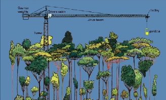

TODO: Say ‘no schoolkids’ in here somewhere
The crane is a Liebherr 91 EC, freestanding construction tower crane (see figure below). The crane is 47 metres tall (154 feet) with a radius of 55 metres (180 feet). It can rotate 360 degrees enabling access to 1 hectare of rainforest. A suspended basket (gondola or dogbox) is attached at the hook to carry personnel into the canopy.
Personnel access the gondola at ground level. Movement of the gondola to a specific position requires rotation of the entire jib in a horizontal plane until the jib is above the position desired. The trolley is then moved along the jib and the hook and gondola are lowered to the desired position.
TODO: replace this crappy jpeg with a better resolution pic.

Operational details
The canopy crane is operated by a qualified crane driver who has responsibility for safe operation of the crane. The operator therefore has authority to make decisions concerning the safe conduct of procedures. The operator also has authority to determine when weather conditions would compromise the safety of crane users and to suspend operations in unsafe conditions. By law a qualified Dogger must be in the gondola at all times during operation, therefore the crane operator drives the crane from the gondola using a remote control. The gondola can accommodate a maximum of four people, including the driver, or a maximum load of 300kg (660lb). All individuals in the gondola must wear a full body harness and lanyard (attached to the gondola). This equipment is provided by the DRO and users will be briefed on fitting the harness before using the crane. There is a small shed at the base of the crane for users to gear-up and prepare any equipment needed for use in the gondola.
Potential users need to be aware of the fact that there are some limitations on the performance of the crane, i.e. speed of travel, movement of gondola. As the gondola is suspended on a cable there is likely to be some swaying movement as the gondola is maneuvered above the canopy. To avoid excessive movements of this type (which could result in damage to the canopy of the forest) the crane is generally driven at low speed. The crane driver will generally be able to position the gondola in any position within or above the canopy. However, users should be aware that consideration of safety and avoiding damage to the forest may restrict the positioning of the gondola.
The crane driver is required to perform a number of safety checks before operating the crane. This has the effect of slightly reducing the time during which the crane is operational. In general however crane users can expect a minimum of seven operational hours per day.
notes
describes the crane with content from http://www.jcu.edu.au/canopycrane/about/JCUPRD_046917.html. Make sure to mention that school kids don’t get to use the crane.
May include some safety info from http://www.jcu.edu.au/canopycrane/informationfor/JCUPRD_050294.html if we don’t want a separate safety page; otherwise links to safety page
| notes | … |
|---|---|
| alternative titles | - |
| targets | R1, PP, CG1 |